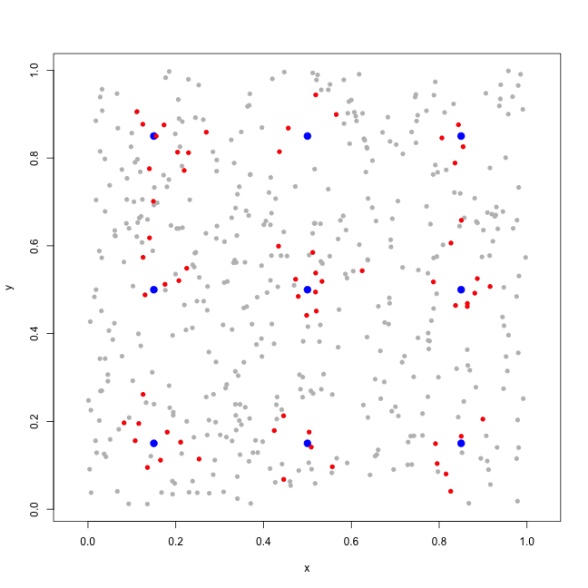
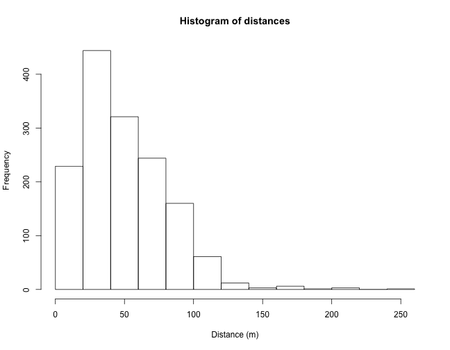
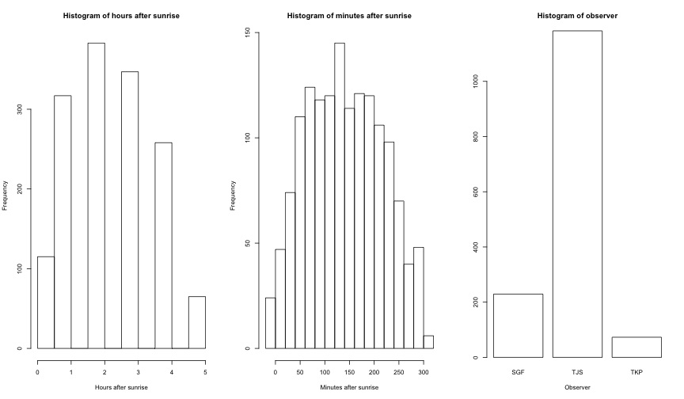
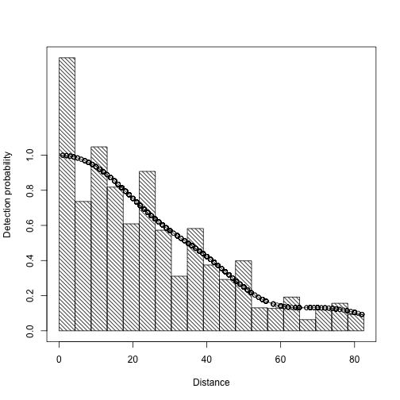
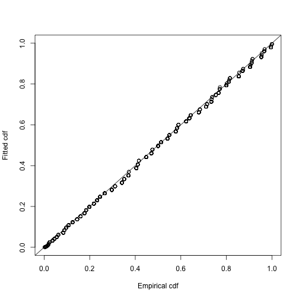
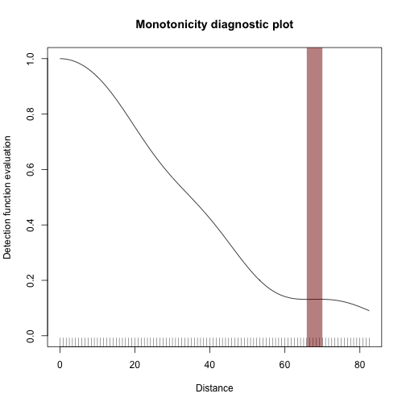
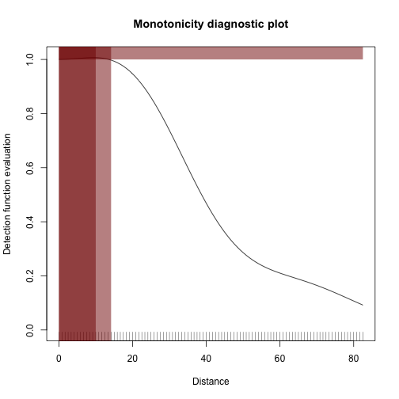
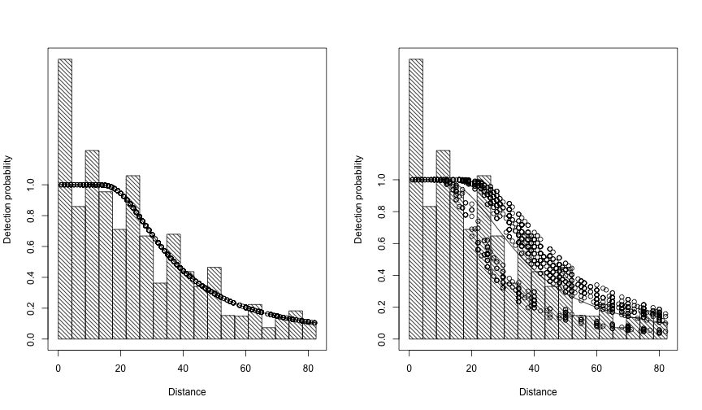

Distance sampling
and
detection function modelling
in Distance
David L Miller
CREEM, University of St Andrews
British Trust for Ornithology
Thetford, UK
26 June 2015

Distance sampling
and
detection function modelling
in Distance
David L Miller
CREEM, University of St Andrews
British Trust for Ornithology
Thetford, UK
26 June 2015


\[ P_a = \int_0^w g(y;\boldsymbol{\theta}) \pi_y(y) \text{d}y \]
(where \(\pi_y(y)\) tells you about geometry of the sampler)

To get the latest versions:
install.packages("devtools")
devtools::install_github("DistanceDevelopment/Distance")
devtools::install_github("DistanceDevelopment/mrds")Photo: USFWS Flickr
http://figshare.com/articles/Amakihi_point_transect_data/1293039# read the data from figshare
amakihi <- read.csv("http://files.figshare.com/1870557/amakihi.csv")
head(amakihi)## survey object distance obs mas has observed
## 1 July 92 1 40 TJS 50 1 1
## 2 July 92 2 60 TJS 50 1 1
## 3 July 92 3 45 TJS 50 1 1
## 4 July 92 4 100 TJS 50 1 1
## 5 July 92 5 125 TJS 50 1 1
## 6 July 92 6 120 TJS 50 1 1hist(amakihi$distance, main="Histogram of distances", xlab="Distance (m)")
par(mfrow=c(1,3))
hist(amakihi$has, main="Histogram of hours after sunrise", xlab="Hours after sunrise")
hist(amakihi$mas, main="Histogram of minutes after sunrise", xlab="Minutes after sunrise")
barplot(table(amakihi$obs), col="white", main="Histogram of observer", xlab="Observer")
library(Distance)## Loading required package: mrds
## This is mrds 2.1.13
## Built: R 3.2.0; ; 2015-06-24 16:41:23 UTC; unixam.hn <- ds(amakihi, truncation=82.5, transect="point")## Starting AIC adjustment term selection.
## Fitting half-normal key function
## Key only models do not require monotonicity contraints. Not constraining model for monotonicity.
## AIC= 10833.841
## Fitting half-normal key function with cosine(2) adjustments
## AIC= 10820.154
## Fitting half-normal key function with cosine(2,3) adjustments
## AIC= 10809.39
## Fitting half-normal key function with cosine(2,3,4) adjustments
## AIC= 10799.122
## Fitting half-normal key function with cosine(2,3,4,5) adjustments
## AIC= 10799.101
## No survey area information supplied, only estimating detection function.plot(am.hn, breaks=seq(0,82.5,len=20))
summary(am.hn)##
## Summary for distance analysis
## Number of observations : 1243
## Distance range : 0 - 82.5
##
## Model : Half-normal key function with cosine adjustment terms of order 2,3,4,5
##
## Strict monotonicity constraints were enforced.
## AIC : 10799.1
##
## Detection function parameters
## Scale Coefficients:
## estimate se
## (Intercept) 3.567027 0.02196773
##
## Adjustment term parameter(s):
## estimate se
## cos, order 2 0.22318534 0.05009086
## cos, order 3 -0.15643873 0.04238821
## cos, order 4 0.13645401 0.04225342
## cos, order 5 -0.05150686 0.04007988
##
## Estimate SE CV
## Average p 0.2816676 0.03745138 0.1329631
## N in covered region 4413.0033196 596.27949902 0.1351188ds.gof(am.hn)
Distance sampling Kolmogorov-Smirnov test
Test statistic = 0.026715 P = 0.33756
Distance sampling Cramer-von Mises test (unweighted)
Test statistic = 0.10577 P = 0.55731check.monocheck.mono(am.hn$ddf, plot=TRUE)
am.hn.bad <- ds(amakihi, truncation=82.5, transect="point",
monotonicity="none", order=c(2,3))
mrds::check.mono(am.hn.bad$ddf, plot=TRUE)
am.hr <- ds(amakihi, truncation=82.5, transect="point", key="hr")## Starting AIC adjustment term selection.
## Fitting hazard-rate key function
## Key only models do not require monotonicity contraints. Not constraining model for monotonicity.
## AIC= 10807.556
## Fitting hazard-rate key function with cosine(2) adjustments
## AIC= 10809.12
##
##
## hazard-rate key function selected!
## No survey area information supplied, only estimating detection function.am.hr.oh <- ds(amakihi, truncation=82.5, transect="point",
key="hr", formula=~obs+has)## Cannot perform AIC adjustment term selection when covariates are used.
## Fitting hazard-rate key function
## AIC= 10777.321
## No survey area information supplied, only estimating detection function.am.hr.o <- ds(amakihi, truncation=82.5, transect="point",
key="hr", formula=~obs)## Cannot perform AIC adjustment term selection when covariates are used.
## Fitting hazard-rate key function
## AIC= 10778.45
## No survey area information supplied, only estimating detection function.summarysummary(am.hr.oh)##
## Summary for distance analysis
## Number of observations : 1243
## Distance range : 0 - 82.5
##
## Model : Hazard-rate key function
## AIC : 10777.32
##
## Detection function parameters
## Scale Coefficients:
## estimate se
## (Intercept) 3.21330485 0.12098538
## obsTJS 0.51791982 0.09637891
## obsTKP 0.09446539 0.17554195
## has -0.05083283 0.02791237
##
## Shape parameters:
## estimate se
## (Intercept) 0.8837793 0.06324849
##
## Estimate SE CV
## Average p 0.3183308 0.02013125 0.06324002
## N in covered region 3904.7429181 264.06817639 0.06762754par(mfrow=c(1,2))
plot(am.hr, breaks=seq(0,82.5,len=20))
plot(am.hr.oh, breaks=seq(0,82.5,len=20))
flatfile formatducknests <- read.csv("http://distancesampling.org/R/vignettes/ducknests.csv")
head(ducknests)## Region.Label Area Sample.Label Effort distance
## 1 Monte_Vista_NWR 0 1 128.75 0.06
## 2 Monte_Vista_NWR 0 1 128.75 0.07
## 3 Monte_Vista_NWR 0 1 128.75 0.04
## 4 Monte_Vista_NWR 0 1 128.75 0.01
## 5 Monte_Vista_NWR 0 1 128.75 0.37
## 6 Monte_Vista_NWR 0 1 128.75 0.36Horvitz-Thompson-like estimator
halfnorm.ducks <- ds(ducknests, key="hn", adjustment="cos",
convert.units = 0.001)## Starting AIC adjustment term selection.
## Fitting half-normal key function
## Key only models do not require monotonicity contraints. Not constraining model for monotonicity.
## AIC= 928.134
## Fitting half-normal key function with cosine(2) adjustments
## AIC= 929.872
##
##
## half-normal key function selected!halfnorm.ducks$dht##
## Summary statistics:
## Region Area CoveredArea Effort n k ER se.ER
## 1 Monte_Vista_NWR 12.36 12.36 2575 534 20 0.2073786 0.007970756
## cv.ER
## 1 0.03843576
##
## Density:
## Label Estimate se cv lcl ucl df
## 1 Total 49.69687 2.936725 0.05909276 44.2033 55.87319 99.55688\[ \hat{N} = \sum_{i=1}^n \frac{s_i}{\hat{p}_i} \]
Distance makes building models easyDistance2readdst to convert Distance for Windows projectsTalk available at:
Buckland, S. T., Anderson, D. R., Burnham, K. P., Laake, J. L., Borchers, D. L., & Thomas, L. (2001). Introduction to Distance Sampling. Oxford University Press.
Buckland, S. T., Anderson, D. R., Burnham, K. P., Laake, J. L., Borchers, D. L., & Thomas, L. (2004). Advanced Distance Sampling. Oxford University Press.
Marques, T. A., Thomas, L., Fancy, S. G., & Buckland, S. T. (2007). Improving estimates of bird density using multiple-covariate distance sampling. The Auk, 124(4).
Thomas, L., Buckland, S. T., Rexstad, E. A., Laake, J. L., Strindberg, S., Hedley, S. L., et al. (2010). Distance software: design and analysis of distance sampling surveys for estimating population size. Journal of Applied Ecology, 47(1), 5–14.